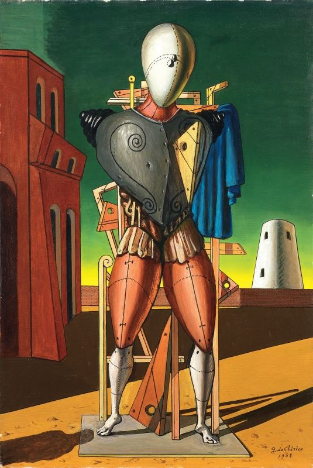
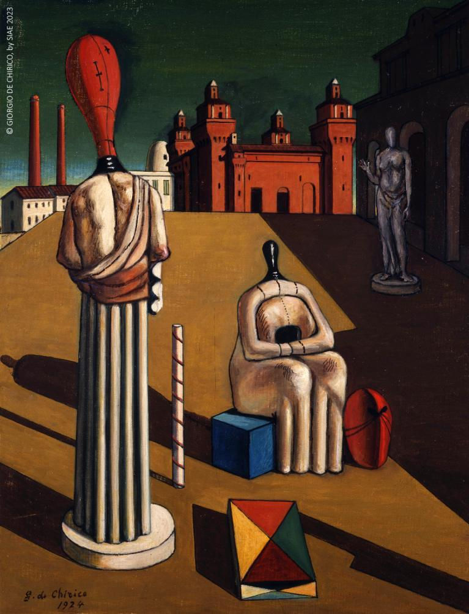
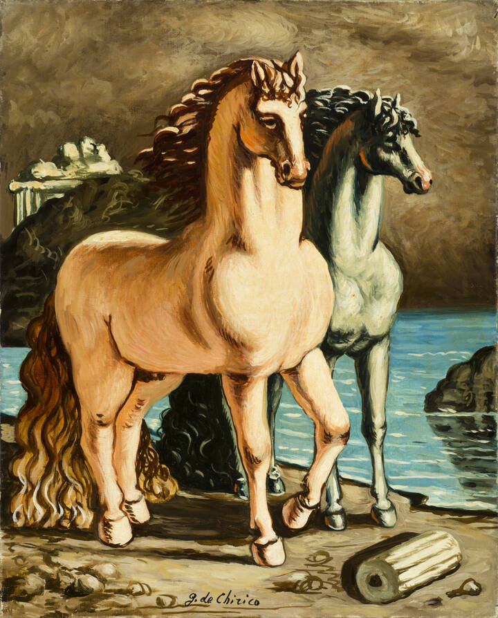
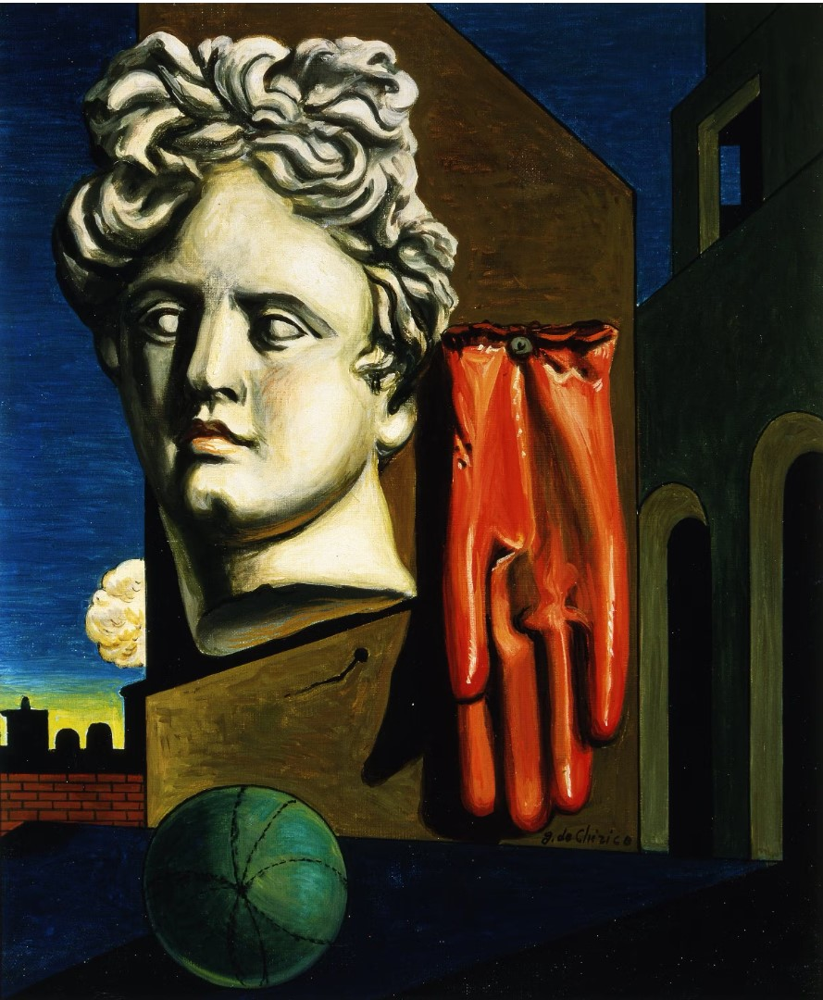
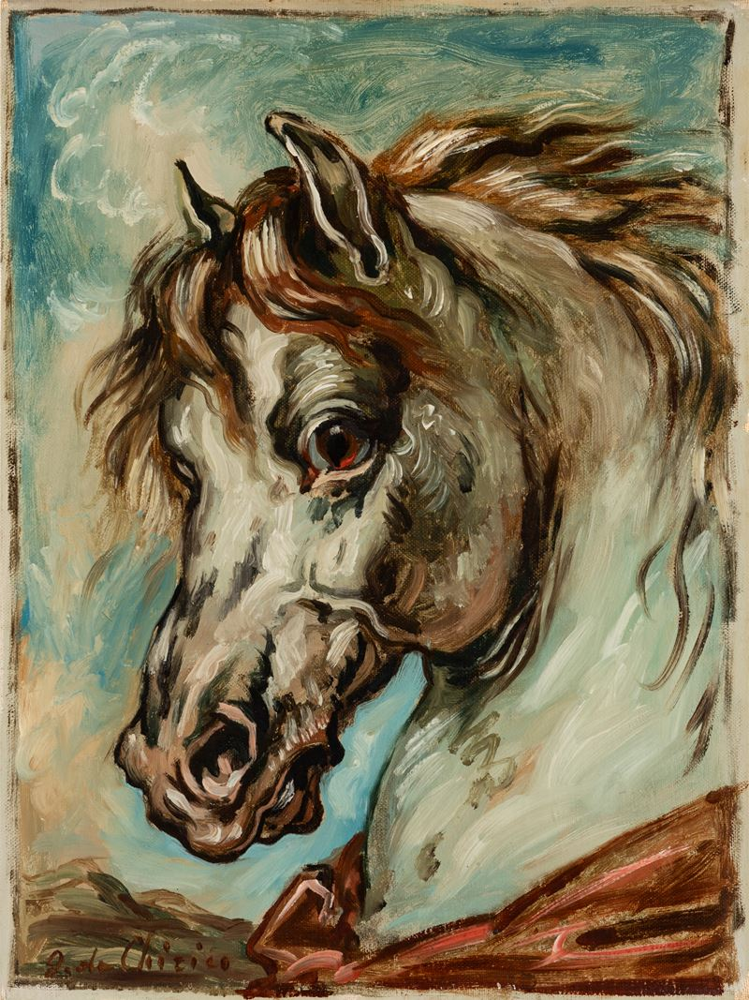
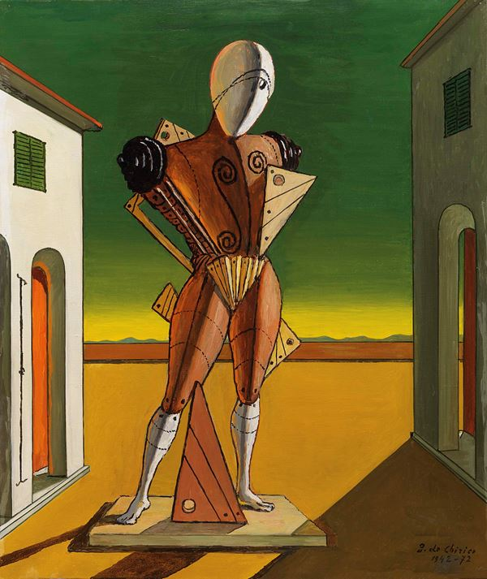

Giorgio De Chirico
Giorgio de Chirico (1888-1978) è stato un pittore italiano, fondatore della pittura metafisica.
Le sue opere surreali e oniriche rappresentano piazze deserte e architetture classiche, creando un'atmosfera di inquietante enigmaticità. Capolavori come "Le Muse inquietanti"
e "L'Enigma dell'Ora" lo resero celebre per il suo stile unico.
De Chirico ha influenzato movimenti come il Surrealismo, lasciando un'impronta indelebile nell'arte del XX secolo.






Torna alla Home Page